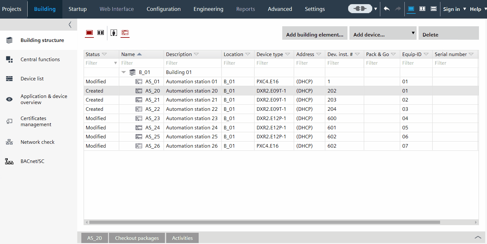

自动生成收藏夹列表
您还可以自动生成自定义收藏夹列表。
这Avail. on AS按钮输入Configuration > Default values用于使功能在 ABT 站点中可见。现在它还可以用于构建自定义收藏夹列表。

Generate a list of custom favorites automatically
- You have added a device with a preconfigured application.
- Go to Building > Building structure.
- Right-click the device and select Go to configuration
- The Configuration > Application configuration dialog box opens.
Application configuration - In the Configuration section, select a feature to display the configuration parameters.
- Select the parameters that you want to display in the custom favorites list, and select Avail. On AS.
- Open Configuration > Default values.
Default values - Select Avail. on AS for the parameters that you want to display in the custom favorites list.
- In the toolbar, click Generate favorite.
- A new list of custom favorites is generated with the selected parameters. The name of the list is SystemFavorite.
- In the status bar, a confirmation message displays.
- Open Configuration > Favorites in order to see the generated list.
Favorites
Delete an item from the automatically generated list
- You have generated a list of custom favorites automatically
- Open Configuration > Favorites.
- Select the automatically generated list SystemFavorites.
- Click Edit.
- Select the property that you want to remove.
- Click Remove object, and then click Apply.
- The selected parameter is removed from the custom favorites list.